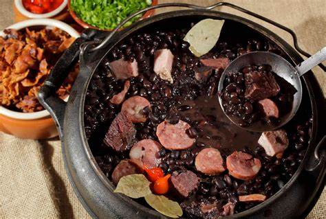

Feijoada
Ingredientes
- 500g de feijão preto
- 200g de carne seca
- 200g de costelinha suína
- 150g de linguiça calabresa
- 1 cebola grande picada
- 2 dentes de alho picados
- 2 folhas de louro
- Sal e pimenta a gosto
Modo de Preparo
- Deixe o feijão de molho por pelo menos 8 horas.
- Cozinhe as carnes e o feijão juntos na panela de pressão por 30 a 40 minutos.
- Em uma panela à parte, refogue cebola e alho e misture ao feijão.
- Ajuste o tempero, adicione louro e cozinhe mais alguns minutos.
- Sirva com arroz branco, farofa e couve refogada.